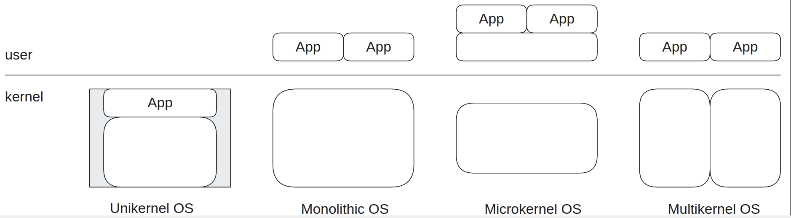
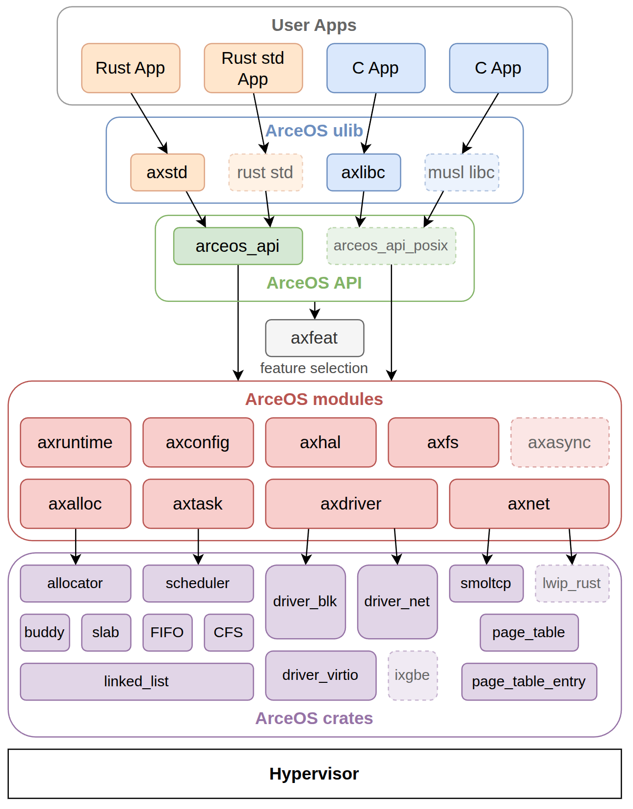
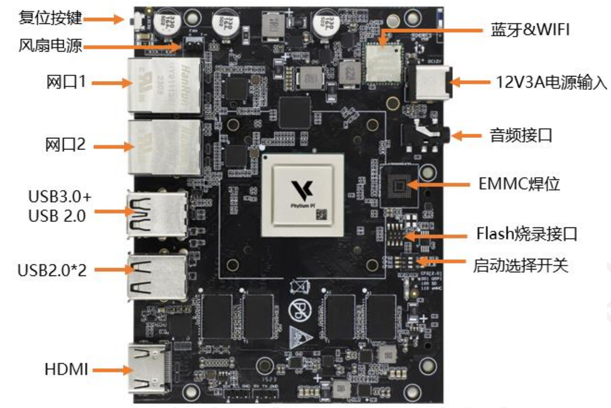
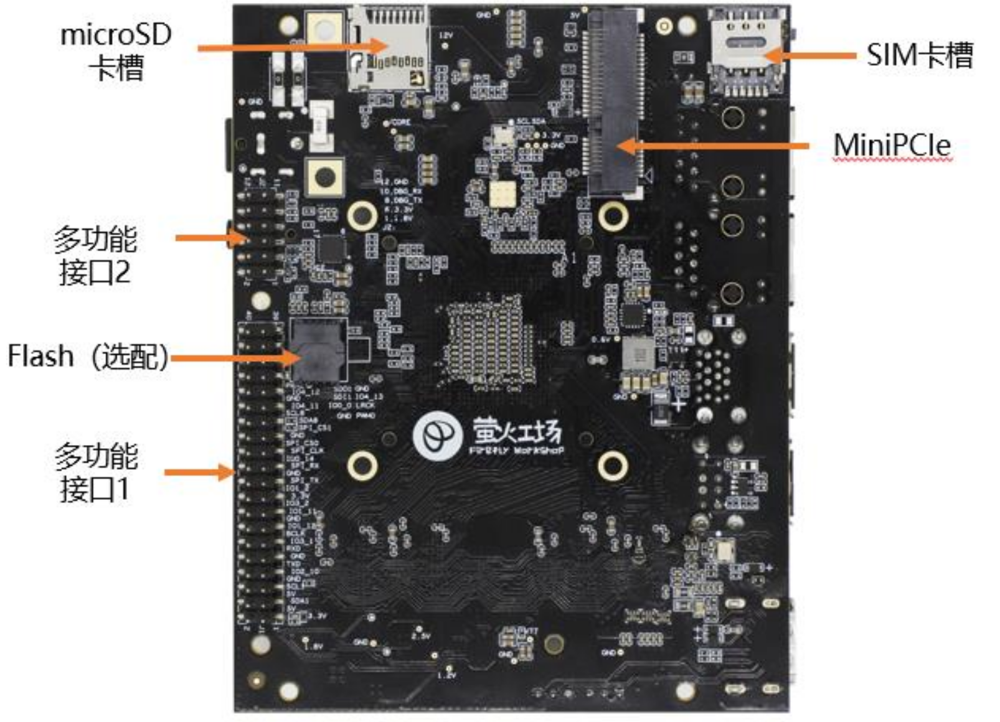
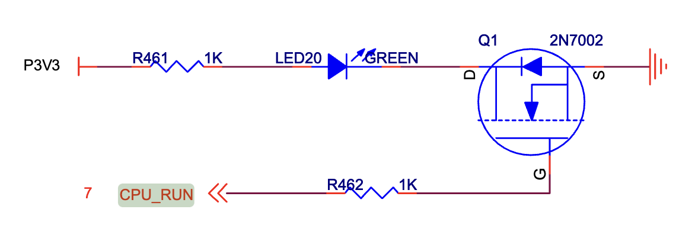
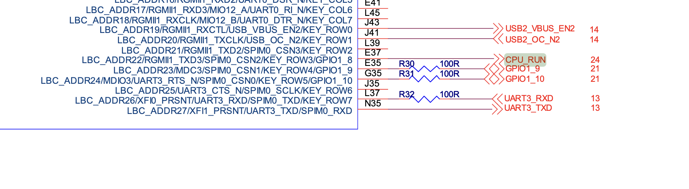
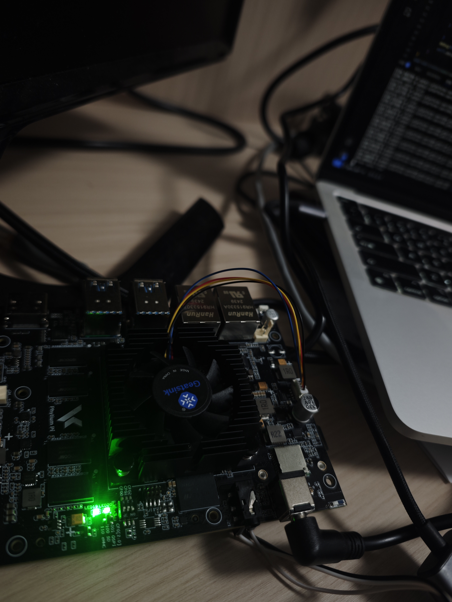
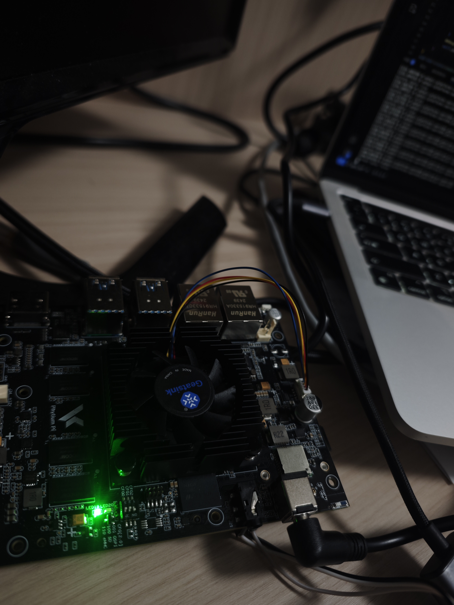

前言
第零章：环境配置与预备知识
0.1 硬件平台介绍
飞腾派开发板硬件平台详解
飞腾派是由萤火工场研发的国产自主可控开源硬件平台，定位于工业控制、嵌入式开发及教育领域，兼具高性能与丰富外设接口，适配多种操作系统生态。
1. 处理器与架构
- 核心配置：搭载飞腾定制四核处理器，采用ARM v8指令集，包含：
- 2×FTC664核（主频1.8GHz）
- 2×FTC310核（主频1.5GHz）
- 架构特性：
- 支持大小核协同调度
- 集成硬件虚拟化支持
- 适用于实时操作系统（RTOS）及边缘计算任务
2. 内存与存储
- 内存：
- 板载64位DDR4内存
- 提供2GB/4GB双版本
- 注：4GB版本采用鑫存储颗粒，2GB版本采用兆易创新颗粒
- 存储：
- 支持MicroSD卡或eMMC模块启动
- 默认从SD卡加载系统
- 推荐使用≥16GB容量的存储介质
3. 网络与无线连接
- 有线网络：
- 双路千兆以太网接口（RJ45）
- 支持DHCP自动分配IP或静态配置
- 无线通信：
- 板载WiFi 6（2.4G/5G双频）
- 蓝牙4.2/BLE4.2
- 集成陶瓷天线
- 移动网络扩展：
- 通过Mini-PCIe接口可扩展4G/5G通信模组
4. 扩展接口与多媒体能力
高速接口
- Mini-PCIe×1：支持AI加速卡（如NPU模块）、4G/5G模组等扩展
- USB接口：
- USB 3.0 Host×1
- USB 2.0 Host×3
工业接口
- CAN FD×2：用于工业总线通信
- UART调试口×2
- **MIO（多功能IO）**×2：可配置为UART/I2C模式
- GPIO×29：支持自定义外设驱动开发
音视频输出
- HDMI：
- 最高支持1080P@60fps视频输出
- 兼容H.264/H.265硬解码
- 3.5mm音频接口：支持音频播放与录制
5. 物理规格与供电
- 尺寸：119mm × 93mm（紧凑型设计）
- 供电：
- 12V/3A直流电源
- 工作温度范围：0~50℃
- 散热：需外接风扇（注意出风方向与电源极性）
6. 操作系统支持与开源生态
- 目前兼容系统：
- Debian 11（Phytium Pi OS）
- Ubuntu
- OpenKylin
- RT-Thread
- 开发工具链：
- Python、Qt、OpenCV等
- 适配机器视觉（如Halcon）及AI框架
- 社区资源：
- 开源硬件设计文档
- 萤火工场社区软件仓库
为何选择飞腾派进行ARCEOS驱动开发？
- 国产化适配：全国产处理器架构，符合信创场景需求
- 外设驱动全覆盖：丰富接口（CAN、I2C、SPI等）为驱动开发提供完整硬件基础
- 实时性扩展：支持Xenomai/Linux-RT，便于验证实时任务调度性能
硬件资源参考：
萤火工场官方文档
0.2 开发环境准备
0.2.1 运行环境
基础运行环境可以参考如下网址,搭建wsl+qemu的开发环境
https://rcore-os.cn/arceos-tutorial-book/ch01-00.html
vscode使用
由于是使用的wsl（inux子系统）作为基础编译环境，默认提供的是命令行搭配vim的方式来编辑文件。这可能并不是大部分人喜欢的开发环境，所以推荐使用vscode搭配remote-ssh插件来进行开发，并且该插件对于wsl是有很好的兼容性的，安装插件后直接选择连接wsl即可使用。


qemu 补充
在第一节的指导手册上使用的qemu版本是7.0.2，而很多模拟的外设是在后续版本才加到qemu中的。所以推荐从官网安装最新版或指定版本qemu官网
以10.0.2 版本为例子，使用如下命令即可完成qemu的安装。
wget https://download.qemu.org/qemu-10.0.2.tar.xz
tar xvJf qemu-10.0.2.tar.xz
cd qemu-10.0.2
make
make install
0.2.2 飞腾派上运行Arceos
首先运行Arceos需要依赖其他系统来提供uboot,所以运行Arceos第一步是先烧录提供的飞腾派OS。
烧录飞腾派OS
https://pan.baidu.com/s/1pStiyqohrB3SxHAFFk8R6Q (提取码：dzdv)
注释： 5-系统镜像/1-PhytiumPIOS（基于Debian）/phytiumpiosv2.1资料包/4G内存-optee版/sdcard.img.7z，解压缩。
下载解压后使用烧录工具将系统镜像烧录到TF卡，之后将TF插到飞腾派的卡槽中，最后连接电源线上电。
烧录工具推荐使用 balenaEtcher
下载地址 https://etcher.balena.io/
也可以使用win32 disk image
下载地址 https://sourceforge.net/projects/win32diskimager/
注释： 常用的手机以及派上的小卡正式名叫做TF或者说microSD 大的是SD卡当然统称为sd卡也是可以的 具体区别可查看这个链接https://www.sd-nand.com/news/technology/312.html
注意引导方式选择从sd卡启动！！！

注释： 如果使用的是带emmc的版本可以直接从emmc启动，是当前版本的麒麟os启动会禁用风扇请注意，过热可能会损坏飞腾派。
启动后连接串口，可以看到如下打印即说明系统成功启动，
 账号:root
密码:root
账号:root
密码:root
编译及运行
首先快速验证请参考这个链接，可以通过ostool来快速验证当前开发环境是完整可用的，避免后面在进行了较多code后因为难以验证而放弃。
下载Arceos
git clone https://github.com/rcore-os/arceos.git
编译Arceos
make A=examples/helloworld ARCH=aarch64 PLATFORM=aarch64-phytium-pi FEARURES="irq" SMP=4 LOG=info
之后会在example/helloword 文件夹内生成对应的可执行文件helloworld_aarch64-phytium-pi.bin
将该文件拷贝到u盘中后将u盘插入飞腾派，之后重启飞腾派并在重启过程中在串口工具中输入enter以进入cmd模式，成功进入后串口打印如下图所示。

执行如下指令即可将本地编译的Arceos部署到飞腾派上运行
usb start
fatload usb 0 0x90000000 helloworld_aarch64-phytium-pi.bin
go 0x90000000

0.3 前置知识引导
本章节主要针对在飞腾派上对arceos开发驱动所需的一些前置知识进行简单的介绍
What is Arceos?
Arceos是基于组件化思想构造、以 Rust 为主要开发语言、Unikernel 形态的操作系统。与传统操作系统的构建方式不同，组件是构成 ArceOS 的基本元素。
What is Rust？
Rust 最早是 Mozilla 雇员 Graydon Hoare 的个人项目。从 2009 年开始，得到了 Mozilla 研究院的资助，2010 年项目对外公布，2010 ～ 2011 年间实现自举。自此以后，Rust 在部分重构 -> 崩溃的边缘反复横跳（历程极其艰辛），终于，在 2015 年 5 月 15 日发布 1.0 版。
-
相比 Go 语言，Rust 语言表达能力更强，性能更高。同时线程安全方面 Rust 也更强，不容易写出错误的代码。包管理 Rust 也更好，Go 虽然在 1.10 版本后提供了包管理，但是目前还比不上 Rust 。
-
相比 C++ 语言，Rust 与 C++ 的性能旗鼓相当，但是在安全性方面 Rust 会更优，特别是使用第三方库时，Rust 的严格要求会让三方库的质量明显高很多。
-
相比 Java 语言，除了极少数纯粹的数字计算性能，Rust 的性能全面领先于 Java 。同时 Rust 占用内存小的多，因此实现同等规模的服务，Rust 所需的硬件成本会显著降低。
这里是部分 Rust 学习相关资料的链接：
- Rust程序设计语言中文版（https://www.rustwiki.org.cn/zh-CN/book/ch01-02-hello-world.html）
- Rust语言圣经（https://course.rs/into-rust.html）
- Rustling（编程题库，可以在实践中对照学习具体用法，具体练习方法在仓库文档中）（https://github.com/LearningOS/rustling-25S-template）
What is Unikernel？
Unikernel 是操作系统内核设计的一种架构（或称形态），从下图对比可以看出它与其它内核架构的显著区别：

Unikernel 相对其它内核架构有三个特点：单特权级：应用与内核都处于同一特权级 - 即内核态，这使得应用在访问内核时，不需要特权级的切换。 单地址空间：应用没有单独的地址空间，而是共享内核的地址空间，所以在运行中，也不存在应用与内核地址空间切换的问题。 单应用：整个操作系统有且仅有一个应用，所以没有多应用之间隔离、共享及切换的问题。 所以相对于其它内核架构，Unikernel 设计实现的复杂度更低，运行效率相对较高，但在安全隔离方面，它的能力最弱。Unikernel 有它适合的特定的应用领域和场景。
ArceOS 选择 Unikernel 作为起步，希望为将来支持其它的内核架构建立基础。本实验指导正是对应这一阶段，从零开始一步一步的构建 Unikernel 形态的操作系统。Unikernel 本身这种简化的设计，可以让我们暂时忽略那些复杂的方面，把精力集中到最核心的问题上。

上图就是 ArceOS 的整体架构，由apps、crates、modules组成
- apps: 应用程序。它的运行需要依赖于modules组件库。
- modules: ArceOS的组件库。
- crates: 通用的基础库。为modules实现提供支持。
本开发手册主要针对 ArceOS 在 Phytium-Pi上开发驱动进行辅助说明，因此对于apps部分不作过多说明，主要对于目前已实现的crates和modules进行说明以辅助开发人员查询
Crates
- allocator: 内存分配算法，包括：bitmap、buddy、slab、tlsf。
- arm_gic: ARM通用中断控制器 (GICv2) 。
- arm_pl011: ARM串行通信接口，用于处理器和外部设备之间的串行通信 。
- axerrno: ArceOS的错误码定义。
- axfs_devfs: ArceOS的设备（Device）文件系统，是axfs_vfs一种实现。
- axfs_ramfs: ArceOS的内存（RAM）文件系统，是axfs_vfs一种实现。
- axfs_vfs: ArceOS的虚拟文件系统接口。
- axio: no_std环境下的I/O traits 。
- capability: Capability-based security 通过设置访问权限控制对系统资源的访问。
- crate_interface: 提供一种在 crate 中定义接口（特征）的方法，其目的是解决循环依赖。
- driver_block: 通用的块存储（磁盘）驱动程序的接口定义。
- driver_common: ArceOS的通用设备驱动接口定义，包括：disk、serial port、 ethernet card、GPU。
- driver_display: 通用的图形设备驱动程序接口定义。
- driver_net: 通用的网络设备 (NIC) 驱动程序定义。
- driver_pci: 定义对PCI总线操作。
- driver_virtio: 实现在driver_common定义的驱动。
- flatten_objects: 为每个存储对象分配一个唯一的ID。
- handler_table: 无锁的事件处理程序表。
- kernel_guard: 利用RAII创建具有本地IRQ或禁用抢占的临界区，用于在内核中实现自旋锁。
- lazy_init: 延迟初始化。
- linked_list: 链表。
- memory_addr: 提供理物理和虚拟地址操作的辅助函数。
- page_table: 页表。
- page_table_entry: 页表项。
- percpu: per-CPU的数据结构。
- percpu_macros: per-CPU的数据结构的宏实现。
- ratio: 比率相关计算。
- scheduler: 统一的调度算法接口，包括：cfs、fifo、round_robin。
- slab_allocator: no_std 环境下的 Slab 分配器（一种内存管理算法）。
- spinlock: no_std 环境下的自旋锁实现。
- timer_list: 定时器，在计时器到期时触发。
- tuple_for_each: 提供遍历tuple字段的宏和方法。
crates可以在 https://crates.io/ 进行具体查询
Modules
- axalloc: ArceOS 的全局内存分配器.
- axconfig: ArceOS 特定平台编译的常量和参数配置。
- axdisplay: ArceOS 的图形化模块。
- axdma: ArceOS 中为需要直接内存访问的设备驱动提供DMA支持。
- axdriver: ArceOS 的设备驱动模块。
- axfs: ArceOS 的文件系统模块。
- axhal: ArceOS硬件抽象层，为特定平台的操作提供统一的API。
- axlog: ArceOS 多个级别日志记录宏，包括：error、warn、info、debug、trace。
- axmm: ArceOS 的内存管理模块，提供虚拟内存地址空间抽象，支持线性映射和按需分配映射
- axnet: ArceOS 的网络模块，包括：IpAddr、TcpSocket、UdpSocket、DnsSocket等。
- axns: ArceOS 中用于命名空间管理功能的模块
- axruntime: ArceOS 的运行时库，负责系统启动和初始化序列，协调其他模块的初始化过程,是应用程序运行的基础环境。
- axsync: ArceOS 提供的同步操作模块，包括：Mutex、spin。
- axtask: ArceOS 的任务调度管理模块，包括：任务创建、调度、休眠、销毁等。
值得注意的是，并非所有模块都是必需的，其中axruntime、axhal、axconfig、axlog在所有构建中都会被启用并编译，而其他模块则会根据启动的功能特性进行选择性的编译，使得ArceOS可以根据不同的需求进行定制化构建
ArceOS最新主线仓库（https://github.com/arceos-org/arceos）
Phytium-Pi
- 顶层接口视图与说明

- 底层接口视图与说明

第一章：硬件控制类驱动
1.1 GPIO驱动开发
GPIO 介绍
GPIO 是 General Purpose Input Output（通用输入/输出） 的缩写，也就意味着这种类型的外设可以配置为多种输入/输出类型。单根GPIO的模型可以简单理解为一根导线。 导线的一端留给硬件工程师，他们可以将这一端任意的连接到他们想要的地方，然后告诉驱动工程师，他们想要 ”这根线“ 起到什么作用；导线的一端连接到cpu核心，驱动工程师通过cpu配置这个模块为指定的功能。
一般来说，GPIO可以用于获取某个的高低电平，作为cpu中断触发源等等。 下面的两个实验将分别验证gpio的 irq 和 输出 工作原理。
memory mapped io
关于这个的实现原理，本章不做过多的解释，否则篇幅将会过长。简单的来说，有了这个技术之后，外设对于cpu来说就是为一块物理内存，cpu可以像操作内存一样来操作设备。在没有这个技术之前，一些古老的设备，像intel的16位cpu，必须使用in/out一些特殊的端口来访问外设。
qemu平台关机实验
对于一些简单的设备，qemu能够很好的进行模拟。因此，对于部分没有开发板而想尝试进行驱动开发学习的同学，我们提供了基于qemu的部分实验。
实验原理
-
gpio 模块介绍
本次实验使用的gpio模块为pl061, 它是arm提供的一个集成化的gpio模块，具有8个引脚，具备常见的gpio功能, qemu也能对这个设备进行模拟（可以使用
qemu-system-aarch64 --device help来查看qemu支持的设备）。 -
pl061 相关寄存器介绍（注意：不同的外设有不同的寄存器，对于驱动工程师来说，阅读外设datasheet是必不可少的技能。所以建议暂时先跳过本节，阅读后再来验证自己的想法）
-
GPIOIS 和 GPIOIEV
这两个寄存器的宽度都为为8bit，对应8个引脚。这两个寄存器共同决定了某个引脚的中断触发方法。他们按如下的方式决定中断类型。
GPIOIS_i GPIOEV_i 引脚i中断方式 0 0 下降沿触发 0 1 上升沿触发 1 0 低电平触发 1 1 高电平触发
-
-
GPIOIE
全称是 PrimeCell GPIO interrupt enable register，翻译过来就是中断使能寄存器。宽度为8bit，对应8个引脚。每一个bit用来配置对应引脚的是否使能中断，1是使能，0是不使能。
实验过程
-
在arceos代码仓库下，使用example为helloworld，先尝试运行得到以下结果。
运行结果
arceos git:(main)✗ make A=examples/helloworld PLATFORM=aarch64-qemu-virt ARCH=aarch64 LOG=debug FEATURES="driver-ramdisk,irq" run ACCEL=n GRAPHIC=n... # skip part build log axconfig-gen configs/defconfig.toml configs/platforms/aarch64-qemu-virt.toml -w smp=1 -w arch=aarch64 -w platform=aarch64-qemu-virt -o "/Users/jp/code/arceos/.axconfig.toml" -c "/Users/jp/code/arceos/.axconfig.toml" Building App: helloworld, Arch: aarch64, Platform: aarch64-qemu-virt, App type: rust cargo -C examples/helloworld build -Z unstable-options --target aarch64-unknown-none-softfloat --target-dir /Users/jp/code/arceos/target --release --features "axstd/log-level-debug axstd/driver-ramdisk axstd/irq" Finished `release` profile [optimized] target(s) in 0.08s rust-objcopy --binary-architecture=aarch64 examples/helloworld/helloworld_aarch64-qemu-virt.elf --strip-all -O binary examples/helloworld/helloworld_aarch64-qemu-virt.bin Running on qemu... qemu-system-aarch64 -m 128M -smp 1 -cpu cortex-a72 -machine virt -kernel examples/helloworld/helloworld_aarch64-qemu-virt.bin -nographic d8888 .d88888b. .d8888b. d88888 d88P" "Y88b d88P Y88b d88P888 888 888 Y88b. d88P 888 888d888 .d8888b .d88b. 888 888 "Y888b. d88P 888 888P" d88P" d8P Y8b 888 888 "Y88b. d88P 888 888 888 88888888 888 888 "888 d8888888888 888 Y88b. Y8b. Y88b. .d88P Y88b d88P d88P 888 888 "Y8888P "Y8888 "Y88888P" "Y8888P" arch = aarch64 platform = aarch64-qemu-virt target = aarch64-unknown-none-softfloat build_mode = release log_level = debug smp = 1 [ 0.001902 0 axruntime:130] Logging is enabled. [ 0.002488 0 axruntime:131] Primary CPU 0 started, dtb = 0x44000000. [ 0.002738 0 axruntime:133] Found physcial memory regions: [ 0.002968 0 axruntime:135] [PA:0x40200000, PA:0x40206000) .text (READ | EXECUTE | RESERVED) [ 0.003304 0 axruntime:135] [PA:0x40206000, PA:0x40209000) .rodata (READ | RESERVED) [ 0.003502 0 axruntime:135] [PA:0x40209000, PA:0x4020d000) .data .tdata .tbss .percpu (READ | WRITE | RESERVED) [ 0.003714 0 axruntime:135] [PA:0x4020d000, PA:0x4024d000) boot stack (READ | WRITE | RESERVED) [ 0.003892 0 axruntime:135] [PA:0x4024d000, PA:0x40250000) .bss (READ | WRITE | RESERVED) [ 0.004080 0 axruntime:135] [PA:0x40250000, PA:0x48000000) free memory (READ | WRITE | FREE) [ 0.004290 0 axruntime:135] [PA:0x9000000, PA:0x9001000) mmio (READ | WRITE | DEVICE | RESERVED) [ 0.004482 0 axruntime:135] [PA:0x9100000, PA:0x9101000) mmio (READ | WRITE | DEVICE | RESERVED) [ 0.004662 0 axruntime:135] [PA:0x8000000, PA:0x8020000) mmio (READ | WRITE | DEVICE | RESERVED) [ 0.004806 0 axruntime:135] [PA:0xa000000, PA:0xa004000) mmio (READ | WRITE | DEVICE | RESERVED) [ 0.004948 0 axruntime:135] [PA:0x10000000, PA:0x3eff0000) mmio (READ | WRITE | DEVICE | RESERVED) [ 0.005098 0 axruntime:135] [PA:0x4010000000, PA:0x4020000000) mmio (READ | WRITE | DEVICE | RESERVED) [ 0.005284 0 axruntime:150] Initialize platform devices... [ 0.005420 0 axhal::platform::aarch64_common::gic:51] Initialize GICv2... [ 0.006258 0 axruntime:176] Initialize interrupt handlers... [ 0.006466 0 axhal::irq:32] irq=30 enabled [ 0.006830 0 axruntime:188] Primary CPU 0 init OK. Hello, world! [ 0.007086 0 axruntime:201] main task exited: exit_code=0 [ 0.007248 0 axhal::platform::aarch64_common::psci:98] Shutting down... -
由于目前arceos是unikernel模式，特权级为el1，所以可以直接在 main.c 中操作设备地址（需要注意的是，这不是一种正确的做法。但对于初学者，为了不在一开始就去研究arecos的复杂代码框架，可以短暂的把实现代码写在这儿。），将pl061模块的三号引脚配置为irq模式。
#![allow(unused)] fn main() { // examples/helloworld/main.c ... /// 0x9030000 是 qemu模拟的aarch64-qemu-virt机器的 pl061模块的基地址(物理地址)。 /// irq number 39 从 aarch64-qemu-virt机器的设备树中找到，7 + 外部中断base(32) = 39 unsafe fn set_gpio_irq_enable() { // PHYS_VIRT_OFFSET 是 arceos 初始化时，将物理内存映射时进行的偏移。 let base_addr = (0x9030000 + PHYS_VIRT_OFFSET) as *mut u8; // pl061的3号引脚 let pin = 3; // 将interrupt设置为边缘触发 let gpio_is = base_addr.add(0x404); *gpio_is = *gpio_is & !(1 << pin); // 设置触发事件 let gpio_iev = base_addr.add(0x40c); *gpio_iev = *gpio_iev & !(1 << pin); // 设置中断使能 let gpio_ie = base_addr.add(0x410); *gpio_ie = 0; *gpio_ie = *gpio_ie | (1 << pin); fn shut_down() { println!("shutdown function called"); unsafe { let base_addr = (0x9030000 + PHYS_VIRT_OFFSET) as *mut u8; let pin = 3; // clear interrupt let gpio_ic = base_addr.add(0x41c); *gpio_ic = (1 << pin); // 关机命令 core::arch::asm!( "mov w0, #0x18; hlt #0xf000" ) } }; register_handler(39, shut_down); println!("set irq done"); } } -
并将中断号注册到 GIC(generic interrupt controller)中，中断号是39。
#![allow(unused)] fn main() { // examples/helloworld/main.c ... /// 0x9030000 是 qemu模拟的aarch64-qemu-virt机器的 pl061模块的基地址(物理地址)。 /// irq number 39 从 aarch64-qemu-virt机器的设备树中找到，7 + 外部中断base(32) = 39 unsafe fn set_gpio_irq_enable() { // PHYS_VIRT_OFFSET 是 arceos 初始化时，将物理内存映射时进行的偏移。 let base_addr = (0x9030000 + PHYS_VIRT_OFFSET) as *mut u8; // pl061的3号引脚 let pin = 3; // 将interrupt设置为边缘触发 let gpio_is = base_addr.add(0x404); *gpio_is = *gpio_is & !(1 << pin); // 设置触发事件 let gpio_iev = base_addr.add(0x40c); *gpio_iev = *gpio_iev & !(1 << pin); // 设置中断使能 let gpio_ie = base_addr.add(0x410); *gpio_ie = 0; *gpio_ie = *gpio_ie | (1 << pin); fn shut_down() { println!("shutdown function called"); unsafe { let base_addr = (0x9030000 + PHYS_VIRT_OFFSET) as *mut u8; let pin = 3; // clear interrupt let gpio_ic = base_addr.add(0x41c); *gpio_ic = (1 << pin); // 关机命令，可以用别的函数替代 core::arch::asm!( "mov w0, #0x18; hlt #0xf000" ) } }; // register handler 会同时将注册和在gic中使能中断完成。 register_handler(39, shut_down); println!("set irq done"); } } -
在main中死循环，等待gpio触发中断。
#[cfg_attr(feature = "axstd", unsafe(no_mangle))] fn main() { println!("Hello, world!"); unsafe { set_gpio_irq_enable(); } println!("loop started!"); loop { sleep(time::Duration::from_millis(10)); } } -
重新执行第一步命令，若无报错，输入
ctrl + a + c进入qemu的console模式，输入system_powerdown时，qemu会模拟一次中断。... [ 0.005842 0 axhal::platform::aarch64_common::gic:51] Initialize GICv2... [ 0.006358 0 axruntime:176] Initialize interrupt handlers... [ 0.006554 0 axhal::irq:32] irq=30 enabled [ 0.007232 0 axruntime:188] Primary CPU 0 init OK. Hello, world! GPIORIS=0x0 [ 0.007688 0 axhal::irq:32] irq=39 enabled set irq done loop started! QEMU 9.2.0 monitor - type 'help' for more information (qemu) syst system_powerdown system_reset system_wakeup (qemu) system_powerdown -
GIC 会将中断分发给 arm 某个核心（由于我们是单核，不存在分发）, cpu对我们注册的关机函数进行回调。
... (qemu) system_powerdown (qemu) shutdown function called [ 50.194414 0 axruntime::lang_items:5] panicked at /Users/jp/.cargo/registry/src/mirrors.ustc.edu.cn-38d0e5eb5da2abae/axcpu-0.1.0/src/aarch64/trap.rs:112:13: Unhandled synchronous exception @ 0xffff0000402010b0: ESR=0x2000000 (EC 0b000000, ISS 0x0) [ 50.195002 0 axhal::platform::aarch64_common::psci:98] Shutting down...
飞腾派点灯实验
实验原理
基本思想是将GPIO配置为作为输出模式，对应的，这个GPIO可以输出为高电平或者低电平。我们都学过初中物理，知道当一个led灯两侧有足够的电压和电流的时候，它就会亮。不过一般的GPIO线输出电流能力都不强，不足以驱动一个led灯。所以一般会用以下两种方式来实现：
- led正极接电源，负极接gpio。gpio输出为低时，led点亮。
- led接 mos 管的gate。一般来说，GPIO为高电压时，会使得mos管闭合，led点亮；反之则熄灭。
参照飞腾派的硬件原理图，板子上有一个灯可以被我们控制，也就是led20，控制方法为第二种方法，控制GPIO线为GPIO1_8。


当然，如果你愿意，飞腾派开发板提供了很多GPIO的拓展线。你可以自己实现一套电路来点亮外接的led灯。
我们最终要实现led灯的"心跳"效果，即 亮1秒，暗1秒，如此往复循环。
寄存器定义
notice： 飞腾派上的GPIO模块操作方式都是统一的，唯一的区别是有的gpio需要先进行引脚复用的配置。具体操作可以参照参考飞腾派裸机开发手册进行配置。本次使用的引脚不需要配置，因为笔者没有找到这个GPIO的引脚复用配置寄存器。按照官方文档描述，没有找到就是不需要配置，所以可以认为这个引脚只有gpio功能。
对于输入输出，我们只关心以下三个寄存器，他们的定义可以在飞腾派软件开发手册很轻松的找到（而且是中文～），这里就不做复制粘贴的工作了。
- GPIO_SWPORT_DR (0x00)
- GPIO_SWPORT_DDR (0x04)
- GPIO_EXT_PORT (0x08)
实验过程
- 编写驱动代码，实现 set_dir 和 set_data 操作，示例代码如下：
#![allow(unused)] fn main() { use bitflags::bitflags; use safe_mmio::fields::ReadWrite; use zerocopy::{FromBytes, Immutable, IntoBytes, KnownLayout}; #[derive(Clone, Eq, FromBytes, Immutable, IntoBytes, KnownLayout, PartialEq)] #[repr(C, align(4))] pub struct PhitiumGpio { data: ReadWrite<GpioPins>, resv: ReadWrite<u16>, dir: ReadWrite<GpioPins>, resv2: ReadWrite<u16>, } #[repr(transparent)] #[derive(Copy, Clone, Debug, Eq, FromBytes, Immutable, IntoBytes, KnownLayout, PartialEq)] pub struct GpioPins(u16); bitflags! { impl GpioPins: u16 { const p0 = 1<<0; const p1 = 1<<1; const p2 = 1<<2; const p3 = 1<<3; const p4 = 1<<4; const p5 = 1<<5; const p6 = 1<<6; const p7 = 1<<7; const p8 = 1<<8; const p9 = 1<<9; const p10 = 1<<10; const p11 = 1<<11; const p12 = 1<<12; const p13 = 1<<13; const p14 = 1<<14; const p15 = 1<<15; } } impl PhitiumGpio { pub fn new(base: usize) -> &'static mut Self { let b = base as *mut PhitiumGpio; unsafe { &mut (*b) } } pub fn set_pin_dir(&mut self, pin: GpioPins, dir: bool) { let mut status = self.dir.0.bits(); debug!("dir data = {status}"); let pb = pin.bits(); if dir == true { status |= pb; } else { status &= !pb; } debug!("dir data = {status}"); self.dir.0 = (GpioPins::from_bits_truncate(status)); } pub fn set_pin_data(&mut self, pin: GpioPins, data: bool) { let mut status = self.dir.0.bits(); debug!(" data = {status}"); let pb = pin.bits(); if data == true { status |= pb; } else { status &= !pb; } debug!(" data = {status}"); self.data.0 = (GpioPins::from_bits_truncate(status)); } } pub use crate::mem::phys_to_virt; pub use memory_addr::PhysAddr; pub const BASE1: PhysAddr = pa!(0x28035000); } - 由于我们目前暂时没有文件系统，无法通过读写文件的方式来控制GPIO。这里直接在main.rs中实例一个GPIO控制器进行相关初始化。
// examples/helloworld/src/main.rs #![cfg_attr(feature = "axstd", no_std)] #![cfg_attr(feature = "axstd", no_main)] use core::time; #[cfg(feature = "axstd")] use axstd::println; use axstd::thread::sleep; #[cfg_attr(feature = "axstd", unsafe(no_mangle))] fn main() { println!("Hello, world!"); let gpio0 = axhal::platform::gpio::PhitiumGpio::new( axhal::platform::gpio::phys_to_virt(axhal::platform::gpio::BASE1).into(), ); let p = axhal::platform::gpio::GpioPins::p8; gpio0.set_pin_dir(p, true); let mut data = false; loop { sleep(time::Duration::from_secs(1)); gpio0.set_pin_data(p, data); println!("current data: {data}"); data = !data; } } - 创建一个大loop，在这个loop中，我们不停的将pin 8的值进行反转，反转一次，sleep 1s，这样就实现了1s灭，1s亮的效果。
// examples/helloworld/src/main.rs #![cfg_attr(feature = "axstd", no_std)] #![cfg_attr(feature = "axstd", no_main)] use core::time; #[cfg(feature = "axstd")] use axstd::println; use axstd::thread::sleep; #[cfg_attr(feature = "axstd", unsafe(no_mangle))] fn main() { println!("Hello, world!"); let gpio0 = axhal::platform::gpio::PhitiumGpio::new( axhal::platform::gpio::phys_to_virt(axhal::platform::gpio::BASE1).into(), ); let p = axhal::platform::gpio::GpioPins::p8; gpio0.set_pin_dir(p, true); et mut data = false; loop { sleep(time::Duration::from_secs(1)); gpio0.set_pin_data(p, data); println!("current data: {data}"); data = !data; } }
- 通过
make A=examples/helloworld ARCH=aarch64 PLATFORM=aarch64-phytium-pi FEATURES=irq LOG=debug进行编译，并烧入飞腾派运行。下面是运行日志以及实拍。
运行结果
Starting kernel ...
d8888 .d88888b. .d8888b.
d88888 d88P" "Y88b d88P Y88b
d88P888 888 888 Y88b.
d88P 888 888d888 .d8888b .d88b. 888 888 "Y888b.
d88P 888 888P" d88P" d8P Y8b 888 888 "Y88b.
d88P 888 888 888 88888888 888 888 "888
d8888888888 888 Y88b. Y8b. Y88b. .d88P Y88b d88P
d88P 888 888 "Y8888P "Y8888 "Y88888P" "Y8888P"
arch = aarch64
platform = aarch64-phytium-pi
target = aarch64-unknown-none-softfloat
build_mode = release
log_level = trace
smp = 1
[ 13.461312 0 axruntime:130] Logging is enabled.
[ 13.467040 0 axruntime:131] Primary CPU 0 started, dtb = 0xf9c29000.
[ 13.474591 0 axruntime:133] Found physcial memory regions:
[ 13.481276 0 axruntime:135] [PA:0x90000000, PA:0x90007000) .text (READ | EXECUTE | RESERVED)
[ 13.491083 0 axruntime:135] [PA:0x90007000, PA:0x9000a000) .rodata (READ | RESERVED)
[ 13.500197 0 axruntime:135] [PA:0x9000a000, PA:0x9000e000) .data .tdata .tbss .percpu (READ | WRITE | RESERVED)
[ 13.511655 0 axruntime:135] [PA:0x9000e000, PA:0x9004e000) boot stack (READ | WRITE | RESERVED)
[ 13.521724 0 axruntime:135] [PA:0x9004e000, PA:0x90051000) .bss (READ | WRITE | RESERVED)
[ 13.531272 0 axruntime:135] [PA:0x90051000, PA:0x100000000) free memory (READ | WRITE | FREE)
[ 13.541167 0 axruntime:135] [PA:0x2800c000, PA:0x2800d000) mmio (READ | WRITE | DEVICE | RESERVED)
[ 13.551496 0 axruntime:135] [PA:0x2800d000, PA:0x2800e000) mmio (READ | WRITE | DEVICE | RESERVED)
[ 13.561825 0 axruntime:135] [PA:0x2800e000, PA:0x2800f000) mmio (READ | WRITE | DEVICE | RESERVED)
[ 13.572155 0 axruntime:135] [PA:0x2800f000, PA:0x28010000) mmio (READ | WRITE | DEVICE | RESERVED)
[ 13.582484 0 axruntime:135] [PA:0x30000000, PA:0x38000000) mmio (READ | WRITE | DEVICE | RESERVED)
[ 13.592813 0 axruntime:135] [PA:0x40000000, PA:0x50000000) mmio (READ | WRITE | DEVICE | RESERVED)
[ 13.603142 0 axruntime:135] [PA:0x58000000, PA:0x80000000) mmio (READ | WRITE | DEVICE | RESERVED)
[ 13.613471 0 axruntime:135] [PA:0x28014000, PA:0x28016000) mmio (READ | WRITE | DEVICE | RESERVED)
[ 13.623800 0 axruntime:135] [PA:0x28016000, PA:0x28018000) mmio (READ | WRITE | DEVICE | RESERVED)
[ 13.634130 0 axruntime:135] [PA:0x28018000, PA:0x2801a000) mmio (READ | WRITE | DEVICE | RESERVED)
[ 13.644459 0 axruntime:135] [PA:0x2801a000, PA:0x2801c000) mmio (READ | WRITE | DEVICE | RESERVED)
[ 13.654788 0 axruntime:135] [PA:0x2801c000, PA:0x2801e000) mmio (READ | WRITE | DEVICE | RESERVED)
[ 13.665117 0 axruntime:135] [PA:0x28034000, PA:0x28035000) mmio (READ | WRITE | DEVICE | RESERVED)
[ 13.675446 0 axruntime:135] [PA:0x28035000, PA:0x28036000) mmio (READ | WRITE | DEVICE | RESERVED)
[ 13.685776 0 axruntime:135] [PA:0x28036000, PA:0x28037000) mmio (READ | WRITE | DEVICE | RESERVED)
[ 13.696105 0 axruntime:135] [PA:0x28037000, PA:0x28038000) mmio (READ | WRITE | DEVICE | RESERVED)
[ 13.706434 0 axruntime:135] [PA:0x28038000, PA:0x28039000) mmio (READ | WRITE | DEVICE | RESERVED)
[ 13.716763 0 axruntime:135] [PA:0x28039000, PA:0x2803a000) mmio (READ | WRITE | DEVICE | RESERVED)
[ 13.727093 0 axruntime:150] Initialize platform devices...
[ 13.733776 0 axhal::platform::aarch64_common::gic:51] Initialize GICv2...
[ 13.741897 0 axhal::platform::aarch64_common::gic:27] GICD set enable: 30 true
[ 13.750182 0 axhal::platform::aarch64_common::gic:27] GICD set enable: 116 true
[ 13.758688 0 axruntime:176] Initialize interrupt handlers...
[ 13.765545 0 axhal::platform::aarch64_common::gic:36] register handler irq 30
[ 13.773878 0 axhal::platform::aarch64_common::gic:27] GICD set enable: 30 true
[ 13.782298 0 axruntime:188] Primary CPU 0 init OK.
Hello, world!
[ 13.789589 0 axhal::platform::aarch64_phytium_pi::gpio:46] dir data = 0
[ 13.797401 0 axhal::platform::aarch64_phytium_pi::gpio:53] dir data = 256
[ 14.805386 0 axhal::platform::aarch64_phytium_pi::gpio:58] data = 256
[ 14.810239 0 axhal::platform::aarch64_phytium_pi::gpio:65] data = 0
current data: false
[ 15.819614 0 axhal::platform::aarch64_phytium_pi::gpio:58] data = 256
[ 15.824467 0 axhal::platform::aarch64_phytium_pi::gpio:65] data = 256
current data: true
[ 16.833928 0 axhal::platform::aarch64_phytium_pi::gpio:58] data = 256
[ 16.838781 0 axhal::platform::aarch64_phytium_pi::gpio:65] data = 0
current data: false
[ 17.848156 0 axhal::platform::aarch64_phytium_pi::gpio:58] data = 256
[ 17.853009 0 axhal::platform::aarch64_phytium_pi::gpio:65] data = 256
current data: true
[ 18.862470 0 axhal::platform::aarch64_phytium_pi::gpio:58] data = 256
[ 18.867323 0 axhal::platform::aarch64_phytium_pi::gpio:65] data = 0
current data: false
[ 19.876698 0 axhal::platform::aarch64_phytium_pi::gpio:58] data = 256
[ 19.881551 0 axhal::platform::aarch64_phytium_pi::gpio:65] data = 256
current data: true
[ 20.891012 0 axhal::platform::aarch64_phytium_pi::gpio:58] data = 256
[ 20.895865 0 axhal::platform::aarch64_phytium_pi::gpio:65] data = 0
current data: false
[ 21.905240 0 axhal::platform::aarch64_phytium_pi::gpio:58] data = 256
[ 21.910093 0 axhal::platform::aarch64_phytium_pi::gpio:65] data = 256
current data: true
[ 22.919554 0 axhal::platform::aarch64_phytium_pi::gpio:58] data = 256
[ 22.924407 0 axhal::platform::aarch64_phytium_pi::gpio:65] data = 0
current data: false
[ 23.933782 0 axhal::platform::aarch64_phytium_pi::gpio:58] data = 256
[ 23.938635 0 axhal::platform::aarch64_phytium_pi::gpio:65] data = 256
current data: true
[ 24.948097 0 axhal::platform::aarch64_phytium_pi::gpio:58] data = 256
[ 24.952950 0 axhal::platform::aarch64_phytium_pi::gpio:65] data = 0
current data: false


优化代码
- 目前驱动代码位于
examples/helloworld/main.c中，这不是一种正确的做法。参考modules/axhal/src/platform/aarch64_common/pl011.rs的实现，在同级目录下实现 pl061.rs。 rust 提供了如tock_registers这样的可以用来定义寄存器的crate，用起来！ - 关机函数实际上是触发了一个异常而导致的关机，当把上一步完成后，换成
axhal::misc::terminate来优雅的关机！ - 实验2的完整代码在这儿。
参考资料
1.2 PWM驱动开发
1.3 复位与引脚复用驱动
第二章：时钟管理类驱动
2.1 NOC时钟驱动
2.2 时钟源驱动
2.3 看门狗驱动
看门狗是为了保障系统在因为某些错误导致挂起时，用来恢复系统所设计的一个硬件．其内部有个定时器，如果在定时器超时时间内，没有周期性地去"喂"（通常以设置某个寄存器，或者拉升/低某个引脚的形式）看门狗，则会导致看门狗重启整个系统．所以，从用户使用的角度来看，用户通常是会设计一个周期性"喂"看门狗的程序，如果内核崩溃恐慌导致系统挂起，则该程序无法继续"喂"狗，看门狗超时导致系统重启．
如上所述，一个看门狗驱动，至少需要提供让用户可以设置超时，启动/关闭看门狗，"喂＂狗等等的接口．因此，在飞腾派Linux内核源码的include/linux/watchdog.h文件中，我们可以看到这样的定义
/** struct watchdog_ops - The watchdog-devices operations
*
* @owner: The module owner.
* @start: The routine for starting the watchdog device.
* @stop: The routine for stopping the watchdog device.
* @ping: The routine that sends a keepalive ping to the watchdog device.
* @status: The routine that shows the status of the watchdog device.
* @set_timeout:The routine for setting the watchdog devices timeout value (in seconds).
* @set_pretimeout:The routine for setting the watchdog devices pretimeout.
* @get_timeleft:The routine that gets the time left before a reset (in seconds).
* @restart: The routine for restarting the machine.
* @ioctl: The routines that handles extra ioctl calls.
*
* The watchdog_ops structure contains a list of low-level operations
* that control a watchdog device. It also contains the module that owns
* these operations. The start function is mandatory, all other
* functions are optional.
*/
struct watchdog_ops {
struct module *owner;
/* mandatory operations */
int (*start)(struct watchdog_device *);
/* optional operations */
int (*stop)(struct watchdog_device *);
int (*ping)(struct watchdog_device *);
unsigned int (*status)(struct watchdog_device *);
int (*set_timeout)(struct watchdog_device *, unsigned int);
int (*set_pretimeout)(struct watchdog_device *, unsigned int);
unsigned int (*get_timeleft)(struct watchdog_device *);
int (*restart)(struct watchdog_device *, unsigned long, void *);
long (*ioctl)(struct watchdog_device *, unsigned int, unsigned long);
};
上面的结构体描述了，Linux下，一个看门狗设备需要提供的操作接口．而这些，由驱动实现．本节我们只会分析其中的start，set_timeout和ping接口，其它接口的说明，超出了本节范围，其中ping方法既是用来给用户提供一个"喂"狗的接口的，而另两个，顾名思义，分别是启动看门狗和设置看门狗超时的功能的．
接下来，我们会结合飞腾派的文档和Linux内核源码，分析如何在Arceos中实现对应的接口．要说明的是，飞腾派中的看门狗的设计遵照ARM-Sbsa规范，其驱动实现位于drivers/watchdog/sbsa-gwdt下．我们可以看到其中对应的方法实现，分别是
static const struct watchdog_ops sbsa_gwdt_ops = {
.owner = THIS_MODULE,
.start = sbsa_gwdt_start,
.stop = sbsa_gwdt_stop,
.ping = sbsa_gwdt_keepalive,
.set_timeout = sbsa_gwdt_set_timeout,
.get_timeleft = sbsa_gwdt_get_timeleft,
};
继续看下去，我们会发现sbsa_gwdt_start，sbsa_gwdt_set_timeout和sbsa_gwdt_keepalive三个函数的实现异常简单，没有太多"魔法"在里面．如下
static void sbsa_gwdt_reg_write(u64 val, struct sbsa_gwdt *gwdt)
{
if (gwdt->version == 0)
writel((u32)val, gwdt->control_base + SBSA_GWDT_WOR);
else
lo_hi_writeq(val, gwdt->control_base + SBSA_GWDT_WOR);
}
/*
* watchdog operation functions
*/
static int sbsa_gwdt_set_timeout(struct watchdog_device *wdd,
unsigned int timeout)
{
struct sbsa_gwdt *gwdt = watchdog_get_drvdata(wdd);
wdd->timeout = timeout;
timeout = clamp_t(unsigned int, timeout, 1, wdd->max_hw_heartbeat_ms / 1000);
if (action)
sbsa_gwdt_reg_write((u64)gwdt->clk * timeout, gwdt);
else
/*
* In the single stage mode, The first signal (WS0) is ignored,
* the timeout is (WOR * 2), so the WOR should be configured
* to half value of timeout.
*/
sbsa_gwdt_reg_write(((u64)gwdt->clk / 2) * timeout, gwdt);
return 0;
}
static int sbsa_gwdt_keepalive(struct watchdog_device *wdd)
{
struct sbsa_gwdt *gwdt = watchdog_get_drvdata(wdd);
/*
* Writing WRR for an explicit watchdog refresh.
* You can write anyting (like 0).
*/
writel(0, gwdt->refresh_base + SBSA_GWDT_WRR);
return 0;
}
static int sbsa_gwdt_start(struct watchdog_device *wdd)
{
struct sbsa_gwdt *gwdt = watchdog_get_drvdata(wdd);
/* writing WCS will cause an explicit watchdog refresh */
writel(SBSA_GWDT_WCS_EN, gwdt->control_base + SBSA_GWDT_WCS);
return 0;
}
本质上，是对SBSA_GWDT_WOR，SBSA_GWDT_WRR和SBSA_GWDT_WCS三个寄存器的操作．关于这些寄存器的描述，我们可以在飞腾派软件软件编程手册V1.0上找到．
WDT_WRR (0x0000)
| 域 | 位 | 读写 | 复位值 | 描述 |
|---|---|---|---|---|
| WDT_WRR | 31:0 | RW | 0x0 | Watchdog更新寄存器．写操作会重新开始看门狗计数，读返回0 |
WDT_WOR (0x1008)
| 域 | 位 | 读写 | 复位值 | 描述 |
|---|---|---|---|---|
| WDT_WOR | 31:0 | RO | 0x3000000 | Watchdog清除寄存器 |
WDT_WCS (0x1000)
| 域 | 位 | 读写 | 复位值 | 描述 |
|---|---|---|---|---|
| reserved | 31:3 | RO | 0x0 | 保留 |
| Ws1 | 2 | RO | 0x0 | 二次超时，读返回当前ws1的值 |
| Ws0 | 1 | RO | 0x0 | 一次超时，读返回当期ws0的值 |
| Wdt_en | 0 | RW | 0x0 | Watchdog使能信号，高有效，常规复位和热保护都会清0． |
对该三个寄存器的写入，会直接导致sys_cnt+WOR寄存器储存的值被更新到WCV寄存器中．而sys_cnt的计数值大于当前WCV寄存器存储的比较值则会导致看门狗超时．
为了让Arceos支持对这三个寄存器进行读取写入，我们需要将三个寄存器的地址空间映射到内核虚拟空间中，在configs/platforms/aarch64-phytium-pi.toml文件中，修改mmio-regions部分，添加上对看门狗的支持.
#
# Device specifications
#
[devices]
# MMIO regions with format (`base_paddr`, `size`).
mmio-regions = [
[0x2800_C000, 0x1000], # UART 0
[0x2800_D000, 0x1000], # UART 1
[0x2800_E000, 0x1000], # UART 2
[0x2800_F000, 0x1000], # UART 3
[0x3000_0000, 0x800_0000], # other devices
[0x4000_0000, 0x1000_0000], # Pcie ecam
[0x5800_0000, 0x2800_0000], # 32-bit MMIO space
[0x2801_4000, 0x2000], # MIO0 - I2C
[0x2801_6000, 0x2000], # MIO1 - I2C
[0x2801_8000, 0x2000], # MIO2 - I2C
[0x2801_A000, 0x2000], # MIO3 - I2C
[0x2801_C000, 0x2000], # MIO4 - I2C
[0x000_2803_4000, 0x1000], # GPIO0
[0x000_2803_5000, 0x1000], # GPIO1
[0x000_2803_6000, 0x1000], # GPIO2
[0x000_2803_7000, 0x1000], # GPIO3
[0x000_2803_8000, 0x1000], # GPIO4
[0x000_2803_9000, 0x1000], # GPIO5
[0x000_2804_0000, 0x2000], # WDT0
[0x000_2804_2000, 0x2000], # WDT1
]
# Watchdog Address
wdt0-paddr = 0x2804_0000 # uint
wdt1-paddr = 0x2804_2000 # uint
在axhal/src/platform/aarch64_common文件夹下创建sbsa_wdt.rs文件，之后我们就可以参照之前linux源码中的实现，来完成看门狗使能，设置超时和关闭看门狗的功能
#![allow(unused)] fn main() { /// Start Watchdog pub fn start_watchdog() { axlog::debug!("starting watchdog"); let wdt = WDT.lock(); unsafe { // Enable Watchdog Timer core::ptr::write_volatile( (wdt.0 + SBSA_GWDT_WCS) as *mut u32, 0x1); } } pub fn set_watchdog_timeout(timeout: u32) { axlog::debug!("set watchdog timeout: {timeout}"); let clk = CNTFRQ_EL0.get(); let wdt = WDT.lock(); unsafe { core::ptr::write_volatile( (wdt.0 + SBSA_GWDT_WOR) as *mut u32, (clk * timeout as u64 / 2) as u32); } } pub fn stop_watchdog() { axlog::debug!("stopping watchdog"); let wdt = WDT.lock(); unsafe { // Disable Watchdog Timer core::ptr::write_volatile( (wdt.0 + SBSA_GWDT_WCS) as *mut u32, 0x0); } } pub fn ping_watchdog() { axlog::debug!("feeding watchdog"); let wdt = WDT.lock(); unsafe { // Write to Watchdog Timer Reset Register to reset the timer core::ptr::write_volatile( (wdt.0 + SBSA_GWDT_WRR) as *mut u32, 0); } } }
接下来，我们进行测试，我们可以选择在内核中启用看门狗，并设置超时时间为6秒，
#![allow(unused)] fn main() { super::aarch64_common::sbsa_wdt::set_watchdog_timeout(6); super::aarch64_common::sbsa_wdt::start_watchdog(); }
同时编写个测试应用
fn main() { println!("Hello, world!"); let mut count = 1usize; loop { println!("count {count}"); count += 1; axstd::thread::sleep(core::time::Duration::from_secs(1)); } }
可观察到如下现象，应用程序计时到第6秒时，设备重启了．

第三章：外设协议类驱动
3.1 UART串口驱动
UART 介绍
uart: universal asynchronous receiver/transmitter，通用异步发送/接受器，是嵌入式设备中最常用全双工通信协议之一。关于它的详细介绍，可以参考 这篇文章。对于软件工程师来说，以下几个概念是必须要掌握的。
-
波特率
波特率就是双方进行通信的时钟速率。由于uart里面并没有时钟线，这也就意味着通信双方需要预先约定好具体的通信速率是多少。使用过类似于xshell这样的串口工具的同学应该就知道，在配置串口的时候，这个值配置不对就会导致屏幕上出现乱码。常用的波特率有115200，9600等。
-
数据宽度
一次传输的数据宽度，可以是5-8的一个值，常见是8bit，因为这对软件开发者来说最友好。毕竟，你也不想把一个u8拆成5bits和3bits来发送吧～
-
停止位
一个特殊的bit，用来告诉对方这一次传输结束了。可以配置为1位或者2位。
-
奇偶校验
在数据传输时增加额外一个1bit，用来使得这一个bit+数据的每一位为1的总数为奇数或者偶数。发送端在发送时，计算出奇偶校验位应该为1或者为0，接收端在接受时，就可以根据这一位校验出数据传输是否出错。当然，这个校验非常不准确，一般不开。
-
8N1
这是一种缩写，意味着8个数据位，没有奇偶校验，1位停止位。这是最常见的串口配置。
一些高级的uart芯片集成了调制/解调的功能，这涉及到了通信原理的一些知识，其配置也对应的复杂更多。飞腾派上搭载9线串口就具有这个功能，不过幸运的是本次实验不涉及这块内容，所以在看寄存器定义时，也不需要对这部分有深入理解。
飞腾派 UART 串口驱动实验
实验目标
- 编写代码实现串口驱动
- 初始化为8N1模式，波特率为115200，非中断模式
- 没有tx/rx FIFO队列，单次接收/发送1一个byte。
- 验证串口通信的基本原理
实验原理
根据原理图，我们使用飞腾派的UART2串口，它被连线到J1端子板的8(tx),10(rx)口上。用杜邦线将8口与10口相连接，uart2 tx发出的数据会被uart rx口被收到。

我们主要关注下面几个寄存器，这些寄存器的定义可以在飞腾派软件开发手册里找到。
- UARTDR: 数据寄存器，用来传输/接受最大8位的数据
- UARTRSR/UARTECR: 接受状态寄存器，用来查看接收过程中是否产生了错误，写这个寄存器可以清除错误。
- UARTFR：标志寄存器，存了各种各样的标志，包括设备忙，发送队列是否为空等等。发送接收都需要查看这个寄存器。
- UARTIBRD：存储波特率经过算法转变后的整数部分
- UARTFBRD：存储波特率经过算法转变后的小数部分
- UARTLCR_H：线控寄存器，控制uart的一些行为。
- UARTLCR：控制寄存器，控制uart的一些行为。
- UARTIMSC：控制是否打开中断。
uart初始化步骤
参考 飞腾派软件开发手册 的 5.22.1.1章节。
发送数据操作流程
参考 飞腾派软件开发手册 的 5.22.1.2章节。
接收数据操作流程
参考 飞腾派软件开发手册 的 5.22.1.3章节。
实验步骤
- 根据数据手册，编写驱动代码。计算波特率的小数部分的值有一个小trick。很多低端嵌入式设备可能不支持浮点运算，为了驱动的通用性，你需要实现一种不用浮点的方法来计算出小数部分的divider的方法。如果没有什么思路，可以参考下面代码的
get_ti_tf函数。实现之后别忘了针对这类函数写一些简单的测试代码，它会省去后期大量的调试工作。
#![allow(unused)] fn main() { // modules/axhal/src/platform/aarch64_phytium_pi/uart.rs use core::ptr::NonNull; use tock_registers::{ interfaces::{Readable, Writeable}, register_bitfields, register_structs, registers::{ReadOnly, ReadWrite, WriteOnly}, }; register_structs! { PhytiumUartRegs { /// Data Register. (0x00 => dr: ReadWrite<u32, DATA::Register>), (0x04 => _reserved0), /// Flag Register. (0x18 => fr: ReadOnly<u32, FLAG::Register>), (0x1c => _reserved1), /// (0x24 => tibd: ReadWrite<u32>), /// (0x28 => tfbd: ReadWrite<u32>), /// Control register. (0x2c => cr_h: ReadWrite<u32, CONTROLH::Register>), (0x30 => cr_l: ReadWrite<u32,CONTROLL::Register>), /// Interrupt FIFO Level Select Register. (0x34 => ifls: ReadWrite<u32>), /// Interrupt Mask Set Clear Register. (0x38 => imsc: ReadWrite<u32>), /// Raw Interrupt Status Register. (0x3c => ris: ReadOnly<u32>), /// Masked Interrupt Status Register. (0x40 => mis: ReadOnly<u32>), /// Interrupt Clear Register. (0x44 => icr: WriteOnly<u32>), (0x48 => @END), } } register_bitfields![u32, DATA [ RAW OFFSET(0) NUMBITS(8), FE OFFSET(9) NUMBITS(1), PE OFFSET(10) NUMBITS(1), BE OFFSET(11) NUMBITS(1), OE OFFSET(12) NUMBITS(1), ], FLAG [ CTS OFFSET(0) NUMBITS(1), DSR OFFSET(1) NUMBITS(1), DCD OFFSET(2) NUMBITS(1), BUSY OFFSET(3) NUMBITS(1), RXFE OFFSET(4) NUMBITS(1), TXFF OFFSET(5) NUMBITS(1), RXFF OFFSET(6) NUMBITS(1), TXFE OFFSET(7) NUMBITS(1), ], CONTROLH [ BRK OFFSET(0) NUMBITS(1) [], PEN OFFSET(1) NUMBITS(1) [], EPS OFFSET(2) NUMBITS(1) [], STP2 OFFSET(3) NUMBITS(1) [], FEN OFFSET(4) NUMBITS(1) [], WLEN OFFSET(5) NUMBITS(2) [ len5 = 0, len6 = 1, len7 = 2, len8= 3 ], SPS OFFSET(7) NUMBITS(1) [], ], CONTROLL [ ENABLE OFFSET(0) NUMBITS(1) [], RSV OFFSET(1) NUMBITS(7) [], TXE OFFSET(8) NUMBITS(1) [], RXE OFFSET(9) NUMBITS(1) [], ], ]; pub struct PhytiumUart { base: NonNull<PhytiumUartRegs>, } unsafe impl Send for PhytiumUart {} impl PhytiumUart { pub const fn new(base: *mut u8) -> Self { Self { base: NonNull::new(base).unwrap().cast(), } } fn get_ti_tf(clock_hz: u32, baude_rate: u32) -> (u32, u32) { let baude_rate_16 = 16 * baude_rate; let ti = clock_hz / baude_rate_16; let tf = clock_hz % baude_rate_16; let tf = (tf * 64 + (baude_rate_16 >> 1)) / baude_rate_16; (ti, tf) } /// no irq, no fifo, 8bits data, 1 stop bit, no odd-even check pub fn init_no_irq(&mut self, clock_hz: u32, baude_rate: u32) { // disable reg let regs = self.regs(); regs.cr_l.write(CONTROLL::ENABLE::CLEAR); // set bd rate let (ti, tf) = Self::get_ti_tf(clock_hz, baude_rate); regs.tibd.set(ti); regs.tfbd.set(tf); // width 8 , no check, stop bit 1 regs.cr_h.write(CONTROLH::WLEN::len8); // no interrupt regs.imsc.set(0); // enable uart ,rx, tx regs.cr_l .write(CONTROLL::ENABLE::SET + CONTROLL::TXE::SET + CONTROLL::RXE::SET); } const fn regs(&self) -> &PhytiumUartRegs { unsafe { self.base.as_ref() } } pub fn read_byte_poll(&self) -> u8 { while self.regs().fr.read(FLAG::RXFE) != 0 {} (self.regs().dr.get() & 0xff) as u8 } pub fn put_byte_poll(&mut self, b: u8) { while self.regs().fr.read(FLAG::BUSY) == 1 || self.regs().fr.read(FLAG::TXFF) == 1 {} self.regs().dr.set(b as u32); } } #[cfg(test)] mod test { use super::*; #[test] fn test_get_ti_tf() { let clock = 100_000_000; let bd_rate = 115200; let b16 = bd_rate * 16; let di = clock / b16; let df = clock % b16; let res = clock as f32 / b16 as f32; println!( "res = {res}, di = {di}, df={df}, df/b16 = {} , clock & (b16 -1)={}", df as f32 / b16 as f32, clock & (b16 - 1) ); assert_eq!((54, 16), PhytiumUart::get_ti_tf(clock, bd_rate)); } } use crate::mem::PhysAddr; use crate::mem::phys_to_virt; use kspin::SpinNoIrq; /// we can only control uart 2 const UART2_BASE: PhysAddr = pa!(0x000_2800_E000); pub static UART2: SpinNoIrq<PhytiumUart> = SpinNoIrq::new(PhytiumUart::new(phys_to_virt(UART2_BASE).as_mut_ptr())); }
- 将飞腾派uart暴露给上层应用： 飞腾派的uart0是通过 println!() 来暴露给 examples 下面的应用的。也就是说它们默认的stdio被输出到uart0的tx口， 这也是为什么我们接入串口调试线，就能看到应用层调用println!输出的字符。我们这里为了方便，将UART2这个设备直接暴露在hal层的misc模块下，你也可以为uart2定义为stderr的接口。
#![allow(unused)] fn main() { // modules/axhal/src/platform/aarch64_phytium_pi/uart.rs use crate::mem::PhysAddr; use crate::mem::phys_to_virt; use kspin::SpinNoIrq; /// we can only control uart 2 const UART2_BASE: PhysAddr = pa!(0x000_2800_E000); pub static UART2: SpinNoIrq<PhytiumUart> = SpinNoIrq::new(PhytiumUart::new(phys_to_virt(UART2_BASE).as_mut_ptr())); }
#![allow(unused)] fn main() { // modules/axhal/src/platform/aarch64_phytium_pi/mod.rs ... pub mod misc { pub fn terminate() -> ! { info!("Shutting down..."); loop { axcpu::asm::halt(); } } pub use super::mio::*; pub use super::uart::*; } ... }
- 在应用层代码中使用 UART2，进行初始化，读取接收数据，并将结果通过*println!*进行输出。
// examples/helloworld/src/main.rs #![cfg_attr(feature = "axstd", no_std)] #![cfg_attr(feature = "axstd", no_main)] use core::time; #[cfg(feature = "axstd")] use axstd::println; use axhal::misc::UART2; #[cfg_attr(feature = "axstd", unsafe(no_mangle))] fn main() { println!("Hello, world!"); let mut uart = UART2.lock(); uart.init_no_irq(100_000_000, 115200); let mut data = 0; loop { uart.put_byte_poll(data); println!("send data {data}"); let read = uart.read_byte_poll(); println!("read data {read}"); println!("sleep 1s"); data = data.wrapping_add(1); axstd::thread::sleep(time::Duration::from_secs(1)); } }
- 烧入飞腾派开发板，运行得到如下日志。
运行结果
Starting kernel ... d8888 .d88888b. .d8888b.
d88888 d88P" "Y88b d88P Y88b
d88P888 888 888 Y88b.
d88P 888 888d888 .d8888b .d88b. 888 888 "Y888b.
d88P 888 888P" d88P" d8P Y8b 888 888 "Y88b.
d88P 888 888 888 88888888 888 888 "888
d8888888888 888 Y88b. Y8b. Y88b. .d88P Y88b d88P
d88P 888 888 "Y8888P "Y8888 "Y88888P" "Y8888P"
arch = aarch64
platform = aarch64-phytium-pi
target = aarch64-unknown-none-softfloat
build_mode = release
log_level = trace
smp = 1
[ 13.466610 0 axruntime:130] Logging is enabled.
[ 13.472338 0 axruntime:131] Primary CPU 0 started, dtb = 0xf9c29000.
[ 13.479890 0 axruntime:133] Found physcial memory regions:
[ 13.486574 0 axruntime:135] [PA:0x90000000, PA:0x90007000) .text (READ | EXECUTE | RESERVED)
[ 13.496382 0 axruntime:135] [PA:0x90007000, PA:0x9000a000) .rodata (READ | RESERVED)
[ 13.505496 0 axruntime:135] [PA:0x9000a000, PA:0x9000e000) .data .tdata .tbss .percpu (READ | WRITE | RESERVED)
[ 13.516953 0 axruntime:135] [PA:0x9000e000, PA:0x9004e000) boot stack (READ | WRITE | RESERVED)
[ 13.527022 0 axruntime:135] [PA:0x9004e000, PA:0x90051000) .bss (READ | WRITE | RESERVED)
[ 13.536570 0 axruntime:135] [PA:0x90051000, PA:0x100000000) free memory (READ | WRITE | FREE)
[ 13.546465 0 axruntime:135] [PA:0x2800c000, PA:0x2800d000) mmio (READ | WRITE | DEVICE | RESERVED)
[ 13.556794 0 axruntime:135] [PA:0x2800d000, PA:0x2800e000) mmio (READ | WRITE | DEVICE | RESERVED)
[ 13.567124 0 axruntime:135] [PA:0x2800e000, PA:0x2800f000) mmio (READ | WRITE | DEVICE | RESERVED)
[ 13.577453 0 axruntime:135] [PA:0x2800f000, PA:0x28010000) mmio (READ | WRITE | DEVICE | RESERVED)
[ 13.587782 0 axruntime:135] [PA:0x30000000, PA:0x38000000) mmio (READ | WRITE | DEVICE | RESERVED)
[ 13.598111 0 axruntime:135] [PA:0x40000000, PA:0x50000000) mmio (READ | WRITE | DEVICE | RESERVED)
[ 13.608440 0 axruntime:135] [PA:0x58000000, PA:0x80000000) mmio (READ | WRITE | DEVICE | RESERVED)
[ 13.618770 0 axruntime:135] [PA:0x28014000, PA:0x28016000) mmio (READ | WRITE | DEVICE | RESERVED)
[ 13.629099 0 axruntime:135] [PA:0x28016000, PA:0x28018000) mmio (READ | WRITE | DEVICE | RESERVED)
[ 13.639428 0 axruntime:135] [PA:0x28018000, PA:0x2801a000) mmio (READ | WRITE | DEVICE | RESERVED)
[ 13.649757 0 axruntime:135] [PA:0x2801a000, PA:0x2801c000) mmio (READ | WRITE | DEVICE | RESERVED)
[ 13.660087 0 axruntime:135] [PA:0x2801c000, PA:0x2801e000) mmio (READ | WRITE | DEVICE | RESERVED)
[ 13.670416 0 axruntime:135] [PA:0x28034000, PA:0x28035000) mmio (READ | WRITE | DEVICE | RESERVED)
[ 13.680745 0 axruntime:135] [PA:0x28035000, PA:0x28036000) mmio (READ | WRITE | DEVICE | RESERVED)
[ 13.691074 0 axruntime:135] [PA:0x28036000, PA:0x28037000) mmio (READ | WRITE | DEVICE | RESERVED)
[ 13.701403 0 axruntime:135] [PA:0x28037000, PA:0x28038000) mmio (READ | WRITE | DEVICE | RESERVED)
[ 13.711732 0 axruntime:135] [PA:0x28038000, PA:0x28039000) mmio (READ | WRITE | DEVICE | RESERVED)
[ 13.722062 0 axruntime:135] [PA:0x28039000, PA:0x2803a000) mmio (READ | WRITE | DEVICE | RESERVED)
[ 13.732391 0 axruntime:150] Initialize platform devices...
[ 13.739074 0 axhal::platform::aarch64_common::gic:51] Initialize GICv2...
[ 13.747199 0 axhal::platform::aarch64_common::gic:27] GICD set enable: 30 true
[ 13.755480 0 axhal::platform::aarch64_common::gic:27] GICD set enable: 116 true
[ 13.763986 0 axruntime:176] Initialize interrupt handlers...
[ 13.770843 0 axhal::platform::aarch64_common::gic:36] register handler irq 30
[ 13.779176 0 axhal::platform::aarch64_common::gic:27] GICD set enable: 30 true
[ 13.787596 0 axruntime:188] Primary CPU 0 init OK.
Hello, world!
send data 0
read data 0
sleep 1s
send data 1
read data 1
sleep 1s
send data 2
read data 2
sleep 1s
send data 3
read data 3
sleep 1s
send data 4
read data 4
sleep 1s
send data 5
read data 5
sleep 1s
send data 6
read data 6
sleep 1s
send data 7
read data 7
sleep 1s
send data 8
read data 8
sleep 1s
send data 9
read data 9
sleep 1s
send data 10
read data 10
sleep 1s
send data 11
read data 11
sleep 1s
send data 12
read data 12
sleep 1s
send data 13
read data 13
sleep 1s
send data 14
read data 14
sleep 1s
^C
实验结论
本实验验证了uart无中断，poll mode的通信模型，实现了相应的驱动代码。
实验代码
完整代码可以在这儿看到
qemu串口驱动实验
qemu模拟的qemu-virt机器使用串口为 pl011 模块，寄存器作用以及地址与飞腾派是一致的，并且默认已经被 arceos 的初始化（不然就看不到arceos的启动所打印的信息了）。具体实现代码可以看这个crate。这个crate默认采用了波特率为115200，8N1的通信格式。
参考资料
3.2 I2C驱动开发
3.3 SPI驱动开发
第四章：高速传输类驱动
4.1 DMA驱动开发
4.2 PCI控制器驱动
4.3 PCIe互联驱动
第五章：网络通信类驱动
5.1 单元测试与调试
5.2 PCIe网卡驱动基础
5.3 IGB网卡驱动实现
5.4 GMAC以太网基础
5.5 YT8521驱动实现
5.6 net_device实现
第六章：存储驱动实现
6.1 Micro SD驱动
6.2 eMMC驱动
6.3 Flash驱动
第七章：多媒体方向
7.1 USB摄像头驱动
USB转串口驱动情境分析
USB转串口测试过程请阅读此文档：USB转串口测试流程
usb协议栈的初始化
-
把usb协议栈编译进内核空间。编译的命令是
make A=apps/usb-hid ...，在usb-hid程序的配置文件Cargo.toml命令里指定了要依赖driver_usb，这样就决定了会把USB协议栈driver_usb编译进内核空间。 -
初始化XHCI控制器。在
usb-hid的main函数会执行USBSystem::new().init()，这样就会进一步调用USBHostSystem::init()初始化XHCI控制器。执行流程如下：#![allow(unused)] fn main() { // host/data_structures/host_controllers/xhci/mod.rs fn init(&mut self) -> &mut Self { // 1. 硬件重置XHCI控制器 self.chip_hardware_reset() // 2. 设置设备槽数量与内存映射 .set_max_device_slots() .set_dcbaap() // 设置设备上下文基地址 // 3. 配置命令环与事件环 .set_cmd_ring() .init_ir() // 初始化中断 // 4. 分配 scratchpad 缓冲区 .setup_scratchpads() // 5. 启动控制器 .start() .test_cmd() // 测试命令环 .reset_ports(); // 重置所有USB端口 self } } -
XHCI控制器检测USB设备的接入。使用
probe()方法扫描所有USB端口，检测物理连接的设备。执行流程如下：#![allow(unused)] fn main() { // host/data_structures/host_controllers/xhci/mod.rs fn probe(&mut self) -> Vec<usize> { let mut founded = Vec::new(); let port_len = self.regs.port_register_set.len(); // 1. 检查所有端口的连接状态 for i in 0..port_len { let portsc = self.regs.port_register_set.read_volatile_at(i).portsc; if portsc.current_connect_status() { founded.push(i); } } // 2. 为每个连接的设备分配slot ID并初始化 for port_idx in founded { let slot_id = self.device_slot_assignment(); // 分配slot ID self.dev_ctx.new_slot(slot_id as usize, 0, port_idx + 1, 32); self.address_device(slot_id, port_idx + 1); // 分配设备地址 self.set_ep0_packet_size(slot_id, self.control_fetch_control_point_packet_size(slot_id)); founded.push(slot_id); } founded } } -
获取USB设备的设备描述符。
#![allow(unused)] fn main() { // host/data_structures/host_controllers/xhci/mod.rs fn control_fetch_control_point_packet_size(&mut self, slot_id: usize) -> u8 { // 发送GET_DESCRIPTOR请求获取设备描述符 let mut buffer = DMA::new_vec(0u8, 8, 64, self.config.lock().os.dma_alloc()); self.control_transfer( slot_id, ControlTransfer { request_type: bmRequestType::new( Direction::In, DataTransferType::Standard, Recipient::Device, ), request: bRequest::GetDescriptor, value: DescriptorType::Device.forLowBit(0).bits(), data: Some((buffer.addr() as usize, buffer.length_for_bytes())), }, ).unwrap(); // 解析描述符获取最大包大小 let data = buffer.to_vec(); data.last().copied().unwrap_or(8) } } -
USB驱动的匹配。在
usb-hid的main函数会执行USBSystem::new().init()，这样也会进一步调用USBDriverSystem::init()注册所有的USB驱动模块。例如CdcSerialDriverModule的should_active()方法，其主要功能是判断是否应该激活 CDC（通用串行总线控制设备类）串口驱动。具体步骤如下：- 设备描述符检查：检查传入的独立设备实例的描述符是否已初始化。
- 设备类、厂商 ID 和产品 ID 检查：如果描述符已初始化，获取设备的类、厂商 ID 和产品 ID，判断是否为特定的厂商和产品（厂商 ID 为
0x1a86，产品 ID 为0x7523，对应沁恒电子的 CH340 串口转换器）。 - 端点信息收集：若匹配成功，收集设备的端点信息。
- 驱动初始化：使用收集到的信息初始化
CdcSerialDriver实例，并将其封装在Option<Vec<Arc<SpinNoIrq<dyn USBSystemDriverModuleInstance<'a, O>>>>中返回。 - 不匹配处理：若不匹配，则返回
None。
-
驱动实例的创建。匹配成功后创建驱动实例，调用
new_and_init方法初始化设备功能。例如CdcSerialDriver的new_and_init方法，其具体的初始化过程如下：- 为读缓冲区分配空间。
- 查找输入端点和输出端点。
- 创建写缓冲区并对其进行初始化。
- 创建控制缓冲区和状态缓冲区。
- 创建CdcSerialDriver实例。
-
驱动实例初始化设备。在
usb-hid的main函数会执行USBSystem::new().init().init_probe()，驱动实例最终就可以调用prepare_for_drive方法通过 URB 请求配置设备接口、端点等。例如CdcSerialDriver的prepare_for_drive方法，其具体的初始化过程如下：- 初始化一个空向量todo_list以保存URB。
- 设置配置描述符。
- 厂商自定义配置流程。这些代码创建了多个控制传输的URB，包括输出和输入操作，涉及不同的命令（如CH341_CMD_C3, CH341_CMD_C1, CH341_CMD_W, CH341_CMD_R等）、索引和值，这些操作参考了Linux源码里的drivers/usb/serial/ch341.h中的
ch341_configure函数以及wireshark抓包数据。 - 配置115200波特率。创建了一系列控制传输的URB，用于将设备的波特率配置为115200。
- 返回配置所需的URB列表。将todo_list封装在some中返回。
-
通过事件系统通知初始化完成。驱动初始化完成后通过事件总线通知上层系统：
#![allow(unused)] fn main() { // usb系统主循环 pub fn drive_all(mut self) -> Self { loop { let tick = self.usb_driver_layer.tick(); // 收集URB请求 if tick.len() != 0 { self.host_driver_layer.tock(tick); // 处理URB并获取UCB } } } }
用户向串口发送数据
-
用户把数据写入发送缓冲区。用户需要调用
CdcSerialDriver的write方法，把数据写入发送缓冲区。当前的测试流程，是在CdcSerialDriver的new_and_init方法里，把hello,world硬写入发送缓冲区。 -
生成URB并发送。
gather_urb方法会检查write_data_bnuffer队列，若队列中有数据，就生成用于批量传输的URB并发送。#![allow(unused)] fn main() { fn gather_urb(&mut self) -> Option<Vec<crate::usb::urb::URB<'a, O>>> { // 总的逻辑是遍历写入数据缓冲区，如果有数据就发送，如果没有数据就接收 let mut todo_list = Vec::new(); if self.write_data_buffer.len() > 0 { // 如果写入数据缓冲区有数据，就发送数据 let write_buffer = if let Some(buffer) = self.write_data_buffer.front() { buffer } else { panic!("write_data_buffer is empty, but write_data_buffer.len() > 0"); }; todo_list.push(URB::new( self.device_slot_id, RequestedOperation::Bulk(BulkTransfer { endpoint_id: self.out_endpoint as usize, buffer_addr_len: write_buffer.lock().addr_len_tuple(), }), )); self.driver_state_machine = StateMachine::Writing; Some(todo_list) } else { // ... 接收数据逻辑 ... } } } -
USB转串口转换器转换并发送数据。USB 转串口驱动把 URB 封装成符合 USB 协议的数据包，经 USB 总线传给 USB 转串口转换器。转换器解析数据包，将数据转为串口信号（如 UART 信号），再通过串口引脚发送出去。
串口数据传给用户
-
USB 转串口转换器接收并转换信号。USB 转串口转换器检测到串口引脚的信号变化，按串口协议解码信号，提取原始数据，接着封装成 USB 数据包，通过 USB 总线传给计算机。
-
生成URB并发送。
gather_urb方法生成用于接收数据的URB。#![allow(unused)] fn main() { fn gather_urb(&mut self) -> Option<Vec<crate::usb::urb::URB<'a, O>>> { // ... 发送数据逻辑 ... } else { // 如果写入数据缓冲区没有数据，就接收数据 todo_list.push(URB::new( self.device_slot_id, RequestedOperation::Bulk(BulkTransfer { endpoint_id: self.in_endpoint as usize, buffer_addr_len: self.read_data_buffer.as_ref().unwrap().lock().addr_len_tuple(), }), )); self.driver_state_machine = StateMachine::Reading; Some(todo_list) } } } -
处理接收完成事件。USB 转串口驱动收到数据后，触发接收完成事件，调用
CdcSerialDriver的receive_complete_event方法。该方法把接收到的数据存储在accepted_date中。 -
用户应用程序接收数据。如果是进行测试，可以在Arceos的日志中看到
accepted data: xxx，其中xxx为串口接收到的数据，这表明串口数据接收成功。如果用户需要串口数据，则应用程序应从accepted_data读取数据。